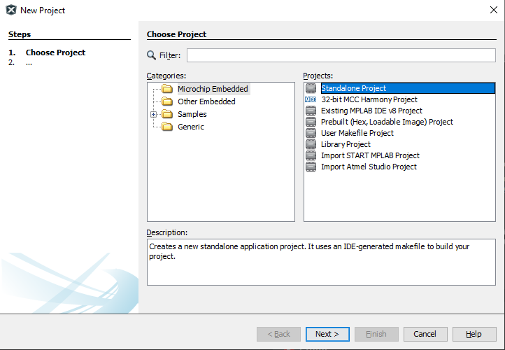
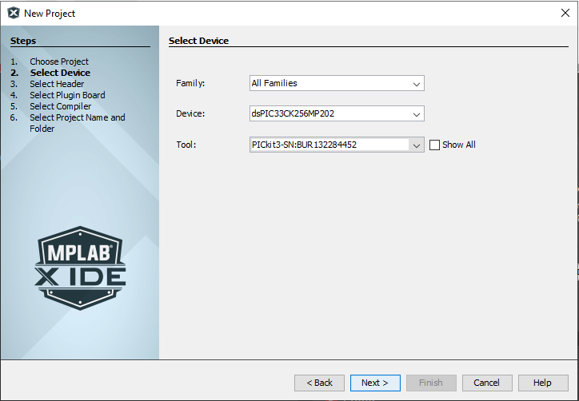

Project Nanolay: Custom dsPIC33 Library
| Author | Mark Angelo Tarvina |
|---|---|
| mttarvina@gmail.com | |
| Date Published | |
| Last Updated |
I. Overview
| Parameter | Value |
|---|---|
| Target Controller IC | dsPIC33CK256MP202 |
| Development Board | Nanolay RevA |
| Source Code | mttarvina/Nanolay: Custom dsPIC33Ck Library (github.com) |
Project Nanolay is my custom built dsPIC33 library intended mainly for me as I try to re-learn how to program a dsPIC33 microcontroller. I find this skill a bit hard to grasp when I encountered this in college as it merges a lot of concepts in basic programming and hardware architecture of microcontrollers. Even after graduating, I know that this is one skill that I haven't fully understood but still something that I have great interest in. This documentation features how to program individual peripherals present in a specific microcontroller device. Please be warned that to be able to follow this documentation clearly, you need to read a lot of text from the datasheet. There is not a lot of user friendly codes that are currently available for the dsPIC microcontrollers, so if you happen to look at the source code, I am, almost all of the time, accessing very specific registers and changing their values to achieve the intended results.
Project Nanolay aims to abstract the low level aspect of programming individual registers in a dsPIC microcontroller, and create functions that are somewhat similar to the functions available in the Arduino environment. If you happen to have an experience in programming Arduino microcontrollers, then you've probably came across a function similar to the one below:
digitalWrite(pin, HIGH);
These kinds of functions simplify the way you can interact with devices or sensors that are connected to your microcontroller without even reading or knowing about the specific registers that should be modified to achieve the same function.
One reason we tend to create abstraction from low level register programming and create functions that encapsulate the whole operation is mainly because of the amount of time we can save when we are working on multiple projects using the same platform or microcontroller. Another thing to add is that reading a program code that contains registers all over the place is really hard to grasp and in most cases, requires a lot of comment to explain the actual functionality.
For those who want to learn about programming dsPIC microcontrollers, you can read through this documentation to have an idea of how it is done. However, keep in mind that depending on the specific part number you have, some of the sections here might not be applicable and some registers may or may not exist. As a general advice, always read your datasheet. I cannot also guarantee that all peripherals will be covered since this is a work in progress. If you just want to learn about a specific peripheral, check the table of contents first before you proceed so it won't be a waste of your time.
For comments/suggestions/corrections, please don't hesitate to send me an email.
II. Prerequisites
Before you follow through this documentation and actually do a hands-on work on your own setup, make sure you have the following already within your grasp:
- Basic knowledge of C programming language
- MPLAB X IDE - I am using v5.50
- MPLAB Code Configurator - Install this plugin within MPLAB X IDE
- XC16 compiler - I am using v1.70
- PICKit 3 or other programmer compatible to MPLAB
- dsPIC33 Microcontroller - I am using a dsPIC33CK256MP202 part number installed in my custom dev board: Nanolay RevA
- Access to device datasheet
- Breadboard and wire jumpers
- 3.3V DC supply - You can use a linear 3.3V regulator sourced from a 5V - 12V DC power source
- Oscilloscope - This is very important as we really need this to verify timing related functions later on
- Multimeter - in case there's something wrong with your hardware setup, a good tool to have in general
II.A. Hardware Setup
You can initially prepare your setup in a breadboard especially if you have a breadboard compatible package for your microcontroller IC. In most cases however, it is better to have your own custom designed development board to eliminate jumper wires in your basic setup. In my case, I am using my custom designed dev board intended for the microcontroller IC that I am using. The details are shown below:
II.B. Making a project in MPLAB X IDE
Please skip this section if you already know how to create projects in MPLAB X IDE, otherwise follow along.
When you open up MPLAB X IDE, in File > New Project, Choose "Microchip Embedded" and "Standalone Projects". Click Next.

Search for the specific part number of your device. If you have your PICKit3 connected, MPLAB should be able to detect it in the Tool dropdown menu. Click Next.
